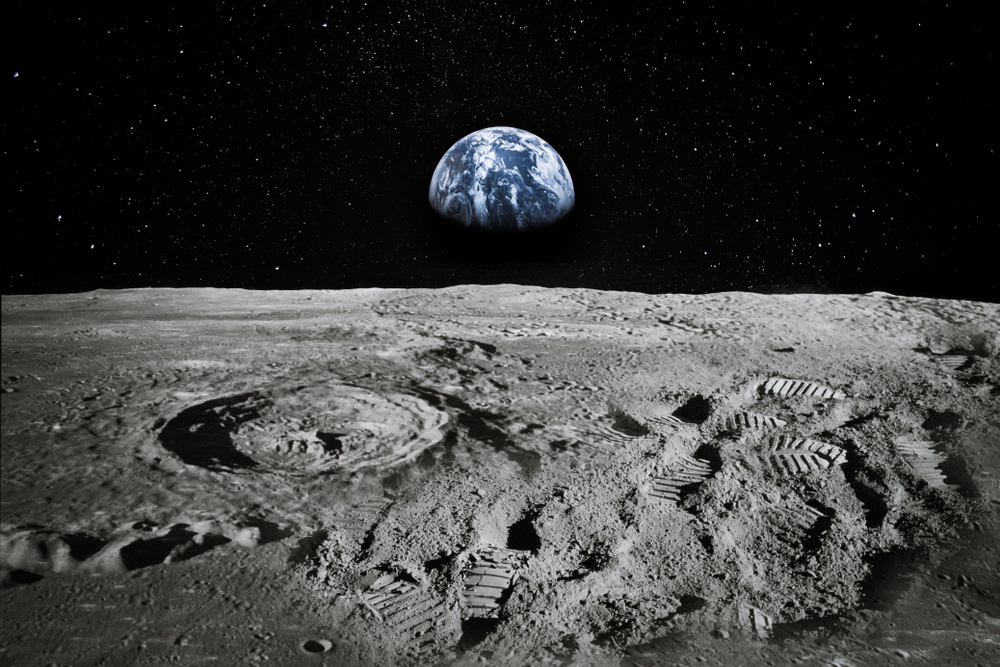
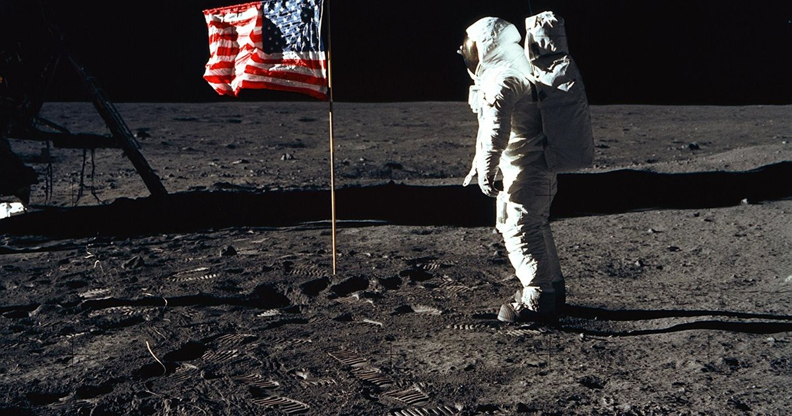
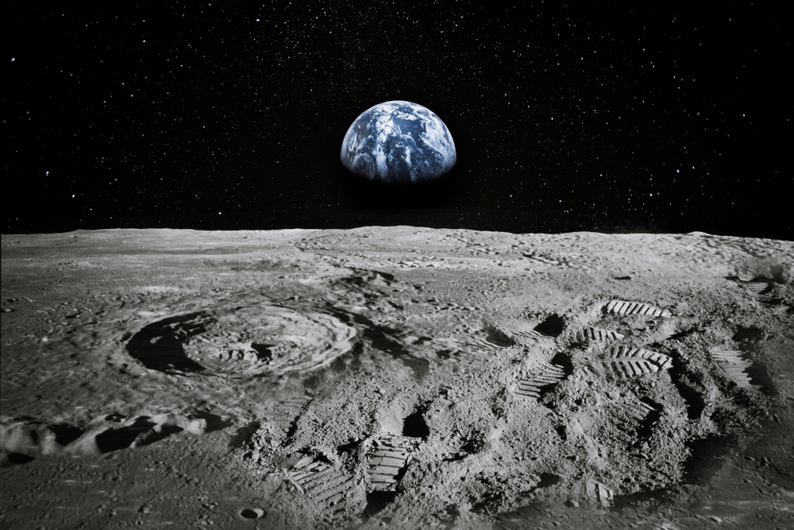
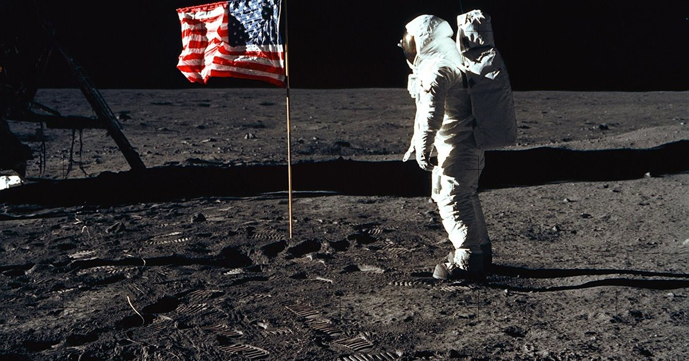

El nacimiento de la luna se teoriza que fue producto de un choque de un cuerpo celeste contra la tierra y parte de los escombros fueron uniendose dando el nacimiento de la luna, este hecho ocurrio hace 4.500 millones de años.
La Luna viaja alrededor de la Tierra en una órbita ovalada a 3680 kilómetros por hora. La luna no tiene atmósfera, por lo tanto su temperatura varía entre -184 grados Celsius durante la noche y a 214 grados Celsius durante el día, excepto en los polos donde la temperatura es constante e igual a -96 grados Celsius.
La luna es el unico cuerpo celeste pisado por el hombre en la mision apolo 11 el dia 16 de julio de 1969 y llegaron a la superficie de la luna el 20 de julio de ese mismo año, la mision fue ejecutada por 3 astronautas pero solo 2 pudieron caminar sobre la luna, estos fueron Armstrong y Aldrin, el exito de esta mision es uno de los mayores logros de la humanidad, esta mision fue realizada por los estados unidos, Aunque el programa Luna de la Unión Soviética fue el primero en alcanzar la Luna con una nave espacial no tripulada.
La gran mancha oscura visible de la Luna, o el llamado 'Océano de las Tormentas', no se originó por el impacto de asteroides como se creía, sino por cambios geológicos en el satélite natural de la Tierra, según un estudio. Según indican los análisis de las muestras de rocas lunares, una vez se empezó a enfriar la Luna, la corteza se solidificó, permitiendo la formación de las rocas más antiguas. Luego se produjo un gran bombardeo de fragmentos rocosos que chocaron con la superficie lunar hace aproximadamente 3.900 millones de años. Estos impactos produjeron una serie de cuencas que emitieron grandes cantidades de magma a la superficie, formando así los ‘mares lunares’. Las rocas allí presentes son basaltos, un tipo de roca ígnea formada por el rápido enfriamiento de magmas que están a temperaturas entre los 1.200 y los 1.000 °C, y cuyos minerales son ricos en hierro y magnesio (ferromagnesianos). Precisamente, por el alto contenido de hierro y magnesio en las rocas basálticas vemos estas regiones mucho más oscuras que el resto de la Luna En otras palabras, se produjo un gran evento de origen volcánico en nuestro satélite y el magma rellenó los espacios más bajos hasta crear las zonas oscuras que se pueden ver en las noches de Luna llena, explicaron.
 


